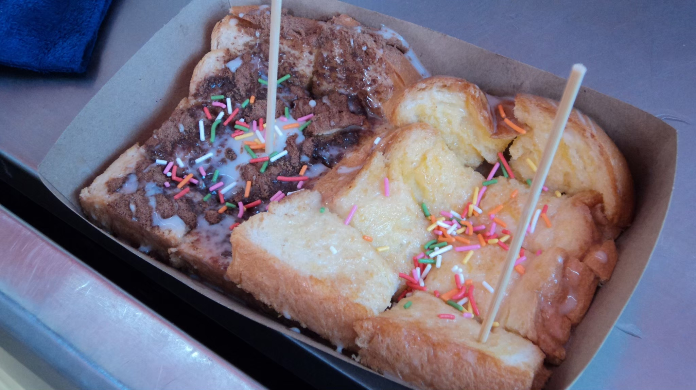
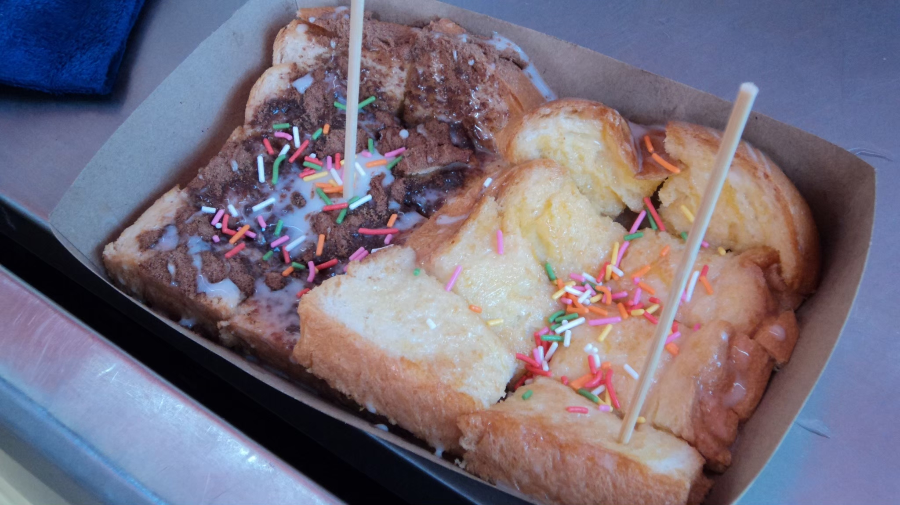
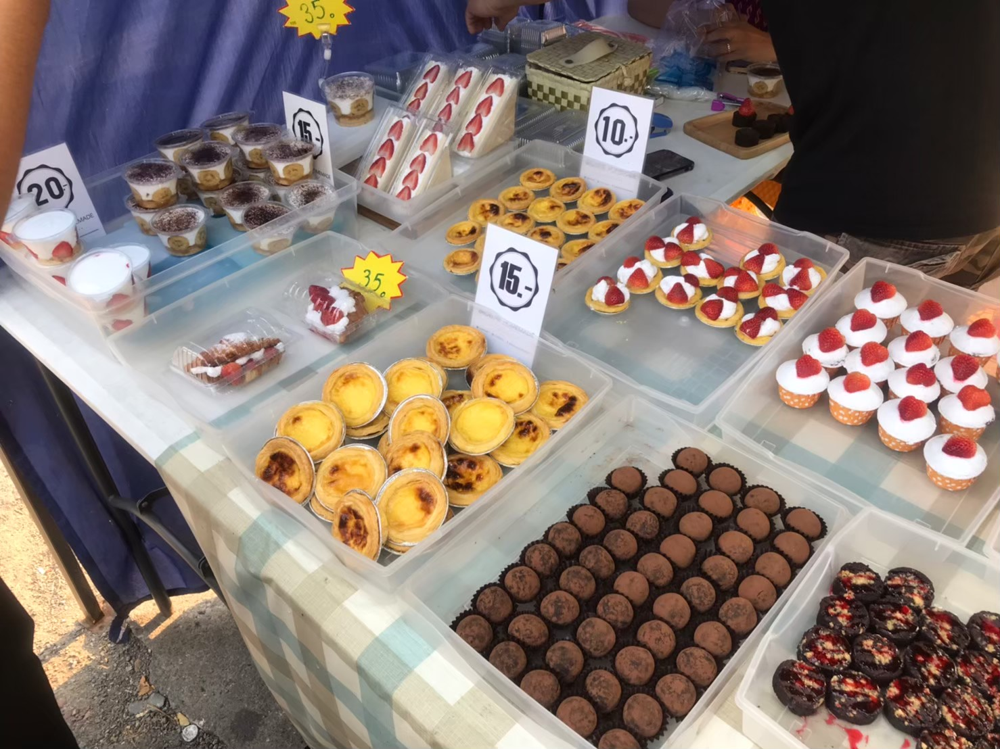
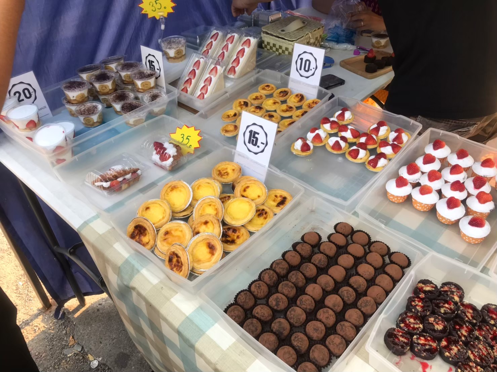

My Awesome Website


Silpakorn University
My Awesome Website

Silpakorn University
ตลาดอินดี้มีของทานเล่นมากมายให้เลือกทาน เช่น ลูกชิ้นปิ้ง ยำลูกชิ้น หมึกย่าง ซูชิ เป็นต้น ราคาย่อมเยาว์เหมาะสำหรับนักเรียน/นักศึกษา
อาหารมากมายเช่น บะหมี่เกี๊ยว ขนมจีน ข้าวขาหมู อาหารตามสั่งต่างๆ รสชาติดี ราคาสบายกระเป๋าสามารถมาเลือกชิมกันได้
สำหรับของหวานมีหลากหลายไม่ว่าจะเป็นน้ำปั่น โรตีมะตะบะ สตอเบอร์รี่โยเกิร์ตและอื่นๆรสชาติอร่อย สายของหวานต้องลอง
เครื่องดื่มดับกระหายที่ตลาดอินดี้ก็มีเช่นกัน ราคาถูกมาก สามารถลองมาเดินเลือกซื้อได้ที่ตลาดอินดี้ ม.ศิลปากร

 
